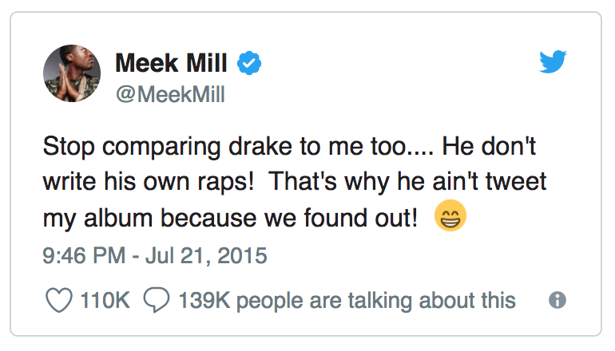
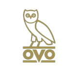

God's plan lyrics
[Intro]
Yeah, they wishin' and wishin' and wishin' and wishin'
Drake has a long history of conflicts. Chris Brown, who allegedly fought Drake in a bar, has publicly defended Meek Mill over legal issues. Meek Mill and Drake had been beefing since 2015, when Meek alleged that Drake didn’t write his own bars:

These lines are likely referencing the ongoing beef between Drake and Joe Budden.
They wishin' on me, yuh
[Verse 1]
I been movin' calm, don't start no trouble with me
Tryna keep it peaceful is a struggle for me
Don't pull up at 6 AM to cuddle with me
You know how I like it when you lovin' on me
I don't wanna die for them to miss me
Yes, I see the things that they wishin' on me
They gon' tell the story, shit was different with me
[Chorus 1]
I hold back, sometimes I won't, yuh
I feel good, sometimes I don't, ayy, don't
I finessed down Weston Road, ayy, 'nessed
Might go down a G.O.D., yeah, wait
Drake seems fixated on the idea that death will immortalize him. He mentioned the same idea in the first verse of this song, but it’s clearly been on his mind for a while—he memorably rapped about it on 2015’s “Legend”: “If I die, I’m a legend”
I go hard on Southside G, yuh, wait
I make sure that north-side eat
[Post-Chorus]
And still
Bad things
It's a lot of bad things
That they wishin' and wishin' and wishin' and wishin'
Drake has a long history of conflicts. Chris Brown, who allegedly fought Drake in a bar, has publicly defended Meek Mill over legal issues. Meek Mill and Drake had been beefing since 2015, when Meek alleged that Drake didn’t write his own bars:
These lines are likely referencing the ongoing beef between Drake and Joe Budden.
They wishin' on me
Bad things
It's a lot of bad things
That they wishin' and wishin' and wishin' and wishin'
Drake has a long history of conflicts. Chris Brown, who allegedly fought Drake in a bar, has publicly defended Meek Mill over legal issues. Meek Mill and Drake had been beefing since 2015, when Meek alleged that Drake didn’t write his own bars:
These lines are likely referencing the ongoing beef between Drake and Joe Budden.
They wishin' on me
Yuh, ayy, ayy
[Verse 2]
She say, “Do you love me?” I tell her, “Only partly”
Fifty dub, I even got it tatted on me
81, they'll bring the crashers to the party
And you know me
Turn the O2 into the O3, dog
Imagine if I never met the broskies
[Chorus 2]
God's plan, God's plan
I can't do this on my own, ayy, no, ayy
Someone watchin' this shit close, yep, close
I've been me since Scarlett Road, ayy, road, ayy
Might go down a G.O.D., yeah, wait
Drake seems fixated on the idea that death will immortalize him. He mentioned the same idea in the first verse of this song, but it’s clearly been on his mind for a while—he memorably rapped about it on 2015’s “Legend”: “If I die, I’m a legend”
I go hard on Southside G, ayy, wait
I make sure that north-side eat, yuh
[Post-Chorus]
And still
Bad things
It's a lot of bad things
That they wishin' and wishin' and wishin' and wishin'
Drake has a long history of conflicts. Chris Brown, who allegedly fought Drake in a bar, has publicly defended Meek Mill over legal issues. Meek Mill and Drake had been beefing since 2015, when Meek alleged that Drake didn’t write his own bars:
These lines are likely referencing the ongoing beef between Drake and Joe Budden.
They wishin' on me
Yeah, yeah
Bad things
It's a lot of bad things
That they wishin' and wishin' and wishin' and wishin'
Drake has a long history of conflicts. Chris Brown, who allegedly fought Drake in a bar, has publicly defended Meek Mill over legal issues. Meek Mill and Drake had been beefing since 2015, when Meek alleged that Drake didn’t write his own bars:
These lines are likely referencing the ongoing beef between Drake and Joe Budden.
They wishin' on me
Yeah
Source: AZ Lyrics



 This may also refer to frequent collaborator, Lil Wayne, whom Drake considers a big brother. He has had a frequent history of almost deadly seizures heightened by his use of the narcotic, lean.
This may also refer to frequent collaborator, Lil Wayne, whom Drake considers a big brother. He has had a frequent history of almost deadly seizures heightened by his use of the narcotic, lean.